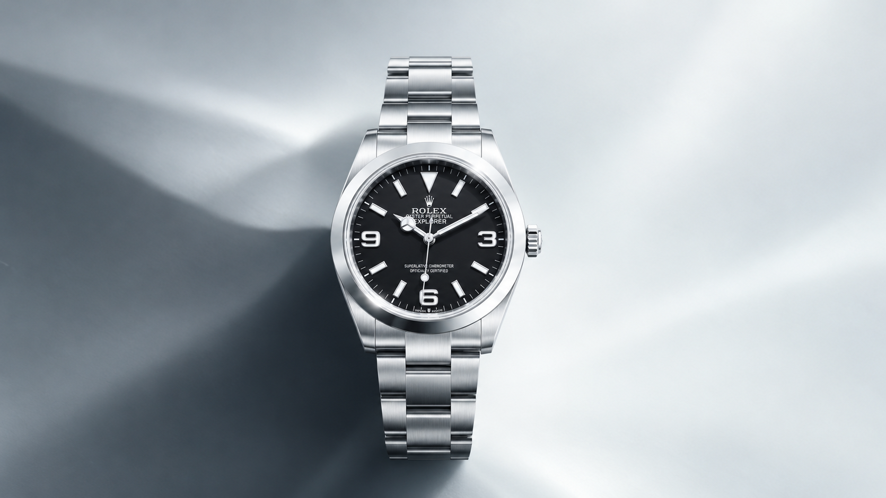
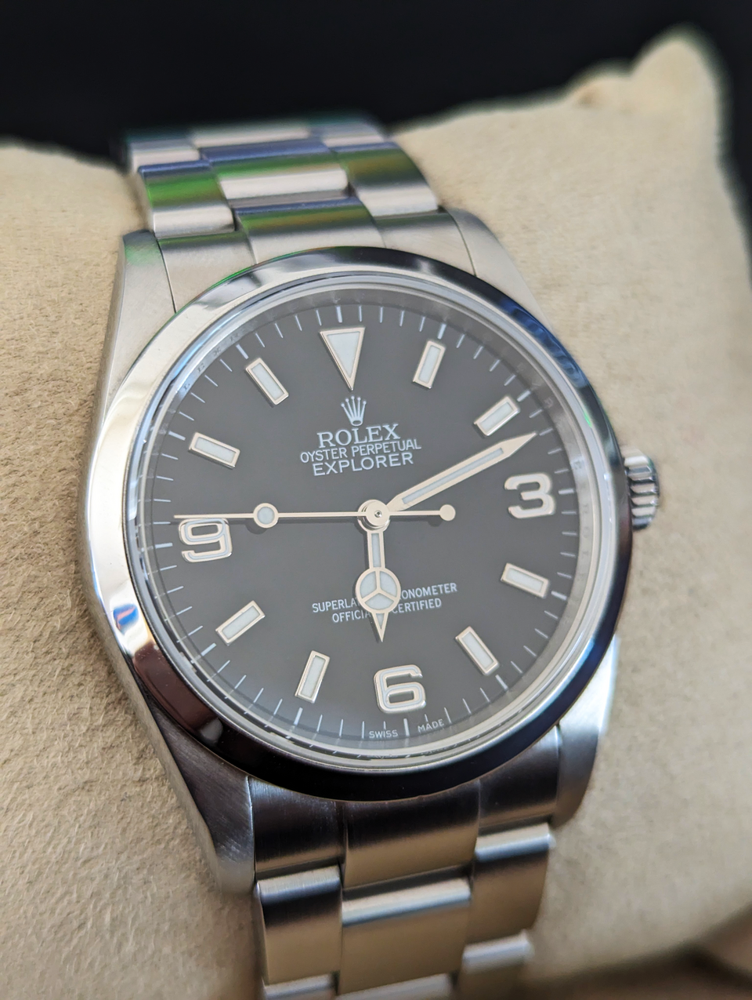

Explorer
Legibility in a clear, purposeful form: black 3-6-9 dial, Chromalight display and a smooth bezel. An attributed Rolex reference guide under the Venturo site shell.
User-supplied family image · exact model/reference not verified
A calm face, read at a glance.
Rolex describes the Explorer’s 3, 6 and 9 numerals and blue-glowing Chromalight display as legibility features. Current sampled models include 36 mm and 40 mm cases, with Oystersteel or Yellow Rolesor construction.
The Explorer is distinct from Explorer II. These Explorer references use a smooth bezel; Explorer II is a separate family with a graduated 24-hour bezel and orange 24-hour hand.
Choose a reference.
Each text-led card opens its matching local detail state and official Rolex model page. No exact-current-reference photo or price is presented.
A name tied to high places.

Rolex connects the Explorer’s presentation to the 1953 Everest ascent and a longer chronology of expedition watches. Its “real-world laboratory” account describes a watch refined alongside exploration; that history and identity belong to Rolex.
The licensed archive image shows reference 114270, an older generation. It is family-history context only and does not establish the appearance of references 224270, 124270 or 124273. The user-supplied hero is likewise family imagery, not a verified exact-reference match.
Reference tools and stories
All Explorer names, references, specifications, imagery and history here are attributed Rolex reference content. Venturo does not manufacture, certify, stock or sell these watches. Prices and availability are omitted. Exact-current-reference photography remains unavailable.